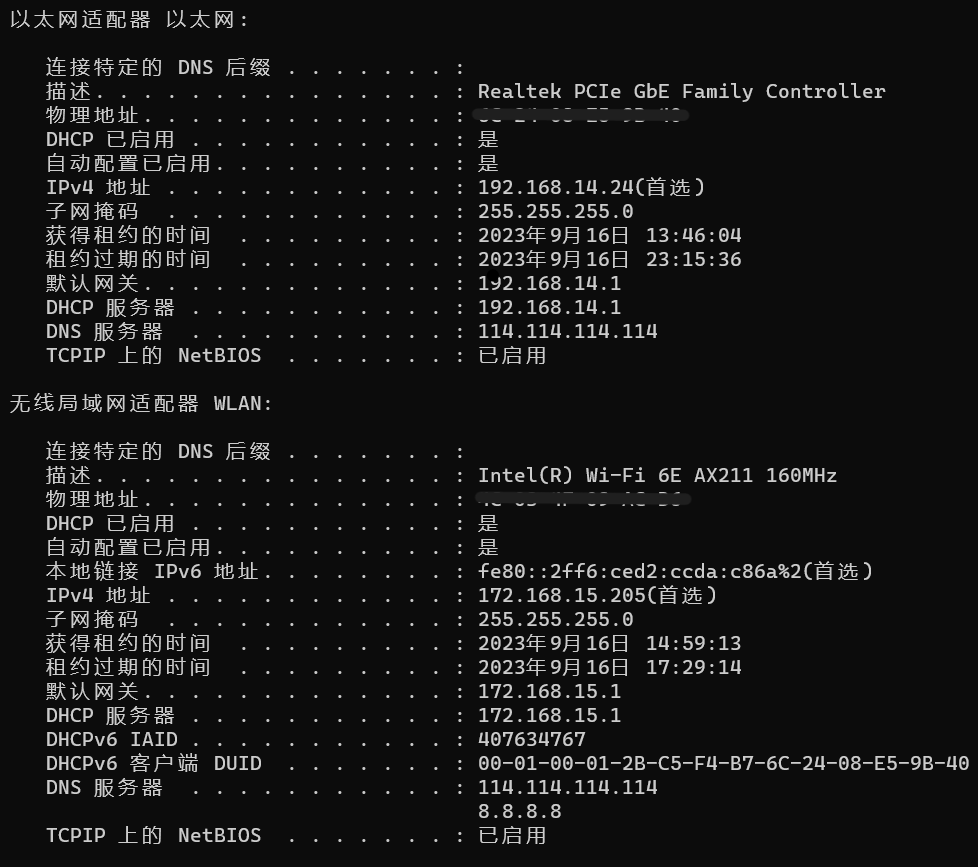

网络状态检查
本文最后更新于：2024年6月23日 下午
最近fps老是延迟+掉包（把把被一枪头想必不是我的问题），加上网口接触不良一直不好确定源头在哪，在此记录一下问题定位的过程
原因分析：
- 数据传输流程：
本地主机 — 本地路由（如果有） — 网关 — 外部网络中转 — 目标主机
很显然突然的延迟和掉包几乎不可能是外部网络中转和目标主机的问题，加上目前是直连宽带，问题只可能出在主机 <—> 网关上
问题排查：
1. 查看自身网络配置：

本地主机有两条连接，网关分别为192.168.14.1（网口）和172.168.15.1(wifi)
2. 运行任一出现掉包的应用
3. 任务管理器中的资源监视器，找到进程PID以及通信的外部IP
我也不知道这么多IP哪一个是导致掉包和延迟的。。先找收发高的吧 180.102.211.22 121.229.89.178
4. netstat查看该进程的网络相关信息
很显然主机是用的192.1168.14.1上的某个端口向外部通信，并且问题大概率出现在与121.229与180.102的通信上
5. tracert查看路由（pathping也行）
两次在走过网口后，都又经过了一个本地IP 100.69.0.1 ，估计是一整栋楼或者本层局域网统一之后的二级网关，经过这个才到外部网络
6. ping
分别 ping -t 了一下网关和100.69两个ip，发现到网关基本上没问题，也就是主机到网口的全过程流畅
每次出现掉包时，到100.69也会出现请求超时，问题就在网口到100.69这段，分析有两种可能：
- 网口到100.69线路导致丢包
- 100.69负载过高，收到数据后转发丢包
问题解决
不信邪，直接去楼上的两间空房和本层的另一间空房试了一下，楼上经网关后统一发向100.65.0.1，楼下统一发向100.69.0.1，且本层其他房间ping 100.69也会出现超时或延迟过高问题，服了，确实是层级网关负载过高的原因
并不是，过几天发现有时网络也会走100.65，而且同样会有丢包现象。
于是偷偷溜进弱点机房观察了一下，一层大概二十个房间，使用两组交换机，每个交换机的24号口连接主路由，主路由的WAN口再连接光猫。主路由还有一个口用来给wifi的路由器。
这个路由器应该就是100.65.0.1，但是为什么之前测试走的100.69，可能有负载均衡吧。
实测不管换线还是换接口，延迟和丢包依旧在。看到主路由还有一个闲置LAN口，索性把自己房间直接跳过交换机接到主路由上，发现延迟还是有些不稳定，但丢包彻底解决。公寓该换交换机了。
本来之后还想着直接接到光猫的闲置口上，但无法识别，可能端口没开启或者是手动分配ip的吧。
1Gbps速率测速能跑到七八十M/s，应该没啥问题，但wifi延迟和带宽还是很拉跨，应该也是wifi路由器的问题。
有线和wifi双网叠加
参考：https://www.zhihu.com/question/294289602/answer/2912972037
系统会优先选择跃点数小的网络进行传输， route print查看连接网络跃点数，之后将两个网络跃点数设置为相同即可
感觉很扯，实测下载速度不变，上传速度翻倍。。。牛皮